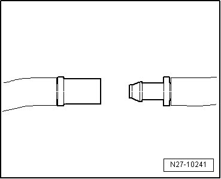
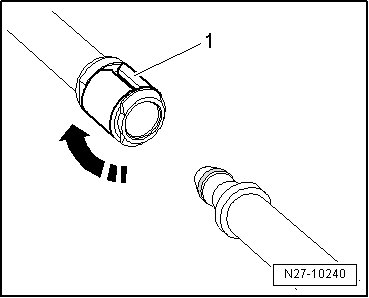
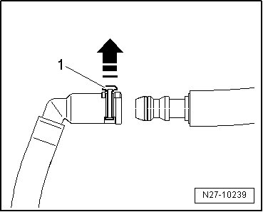
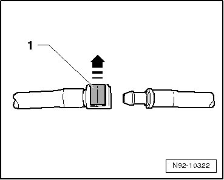

Windshield and Rear Window Washer System Hose Connections
Windshield and Rear Window Washer System Hose Connections
- Disconnect by pulling apart both halves of coupling.

- Reconnect by pushing both halves of coupling together until felt and heard to engage.
- Disconnect by turning lock ring - 1 - through 90° - arrow - and then pulling apart both halves of coupling.

- Reconnect by pushing both halves of coupling together and rotating locking ring - 1 - - arrow - until it engages.
- Disconnect by lifting lock ring - 1 - approximately 1 mm - arrow - and then pulling apart both halves of coupling.

- To secure connection, connect hose connection and press in securing ring - 1 - until it engages.
- To secure connection, connect hose connection and press in securing clip - 1 - until it engages.
- Disconnect by raising clip - 1 - - arrow - and then separating coupling from jet.

- To secure connection, connect hose connection and press in securing clip - 1 - until it engages.